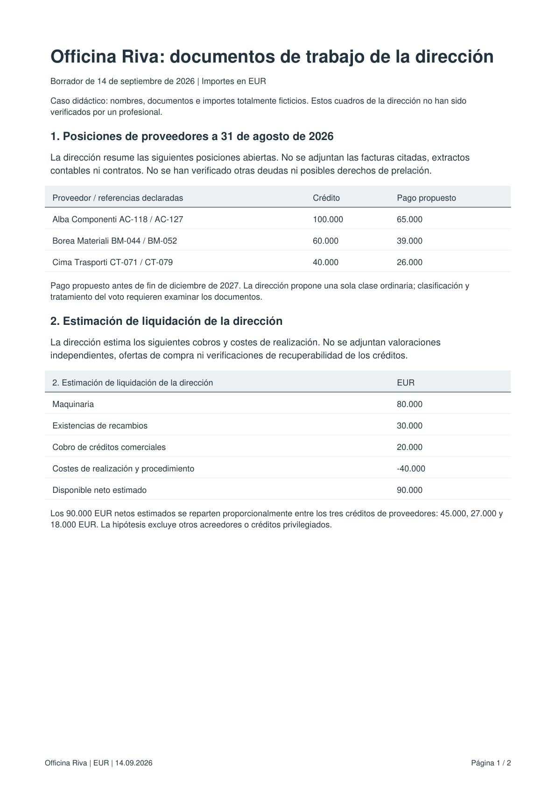
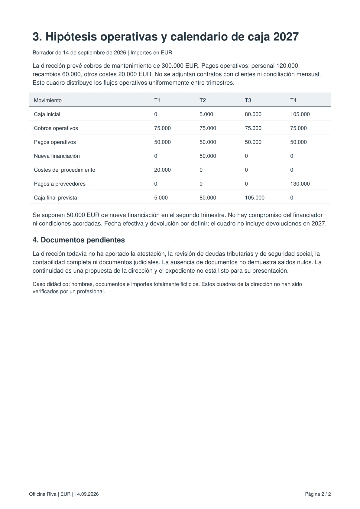

Archivo de la lección
management-demo-es.pdf
files/input/management-demo-es.pdf
Aquí puedes leer el contenido del archivo proporcionado para esta lección. La función utiliza el archivo original; esta página solo permite leerlo.

